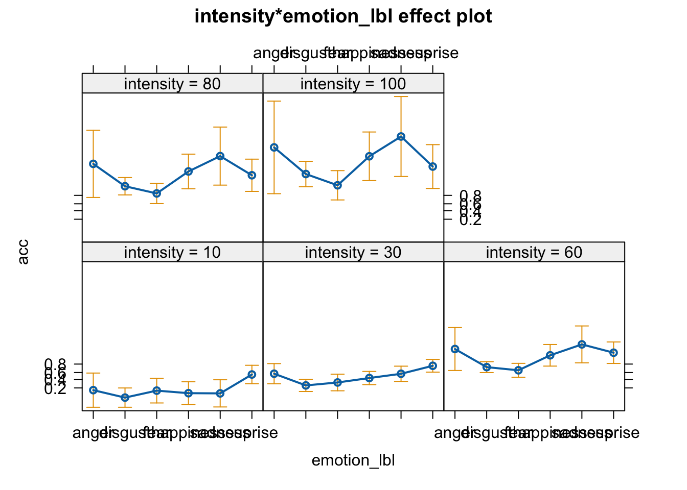
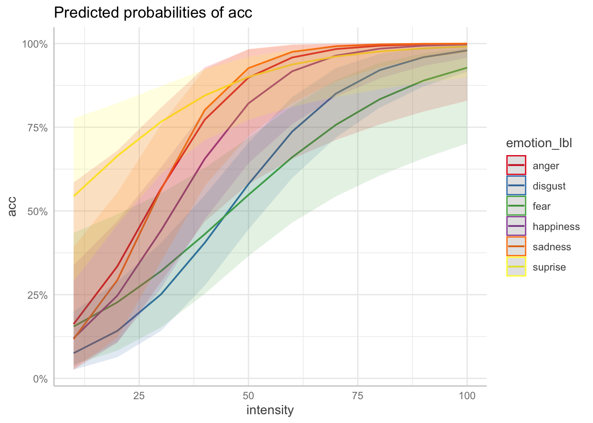
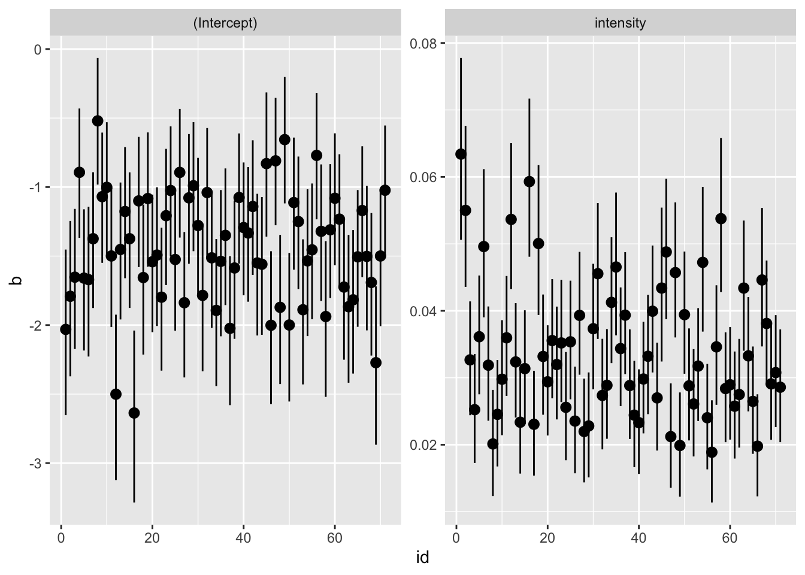
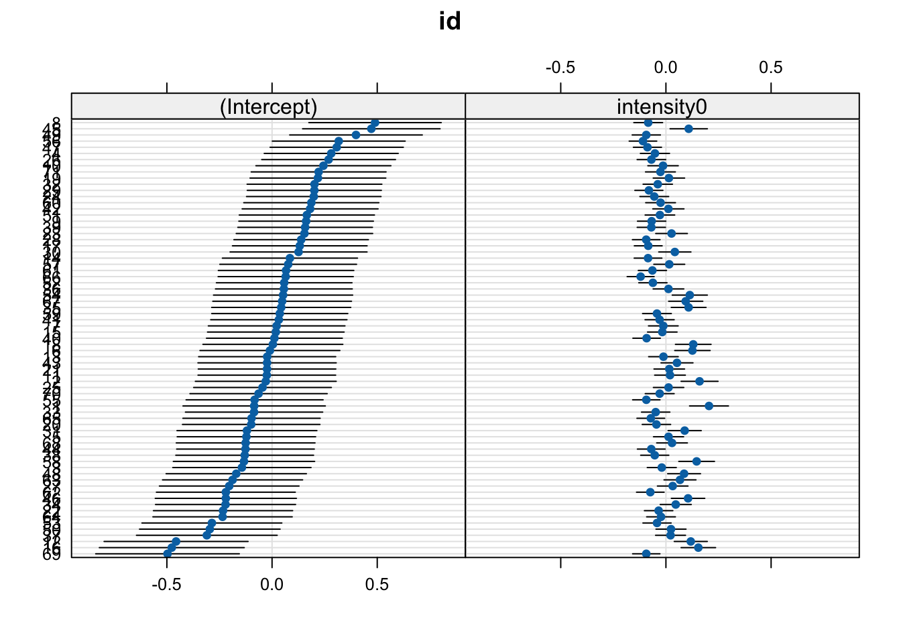
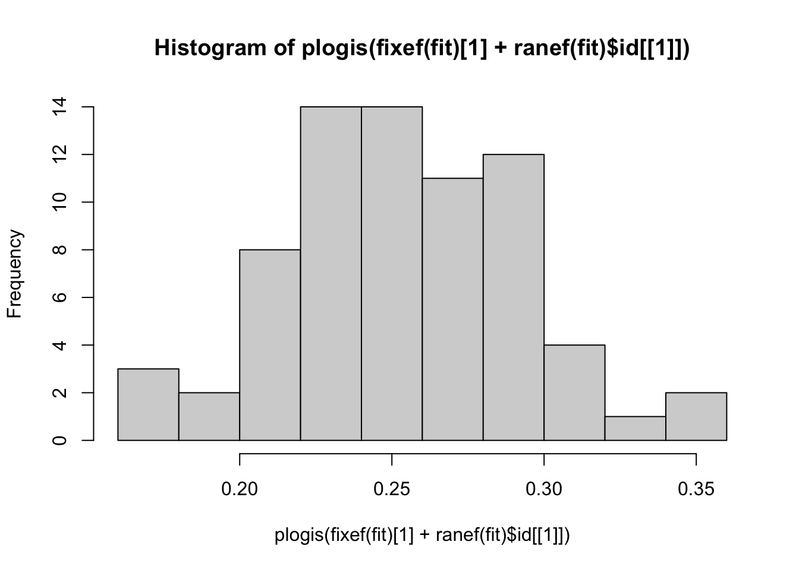

library(here)
library(lme4)
library(tidyverse)
library(effects)
library(ggeffects)
library(sjPlot)
library(lattice)2025-04-01
# loading data
dat <- readRDS(here("data/emoint.rds"))
dat <- filter(dat, emotion_lbl != "neutral")Single-subject model:
fit <- glm(acc ~ intensity * emotion_lbl,
data = dat,
subset = id == 1,
family = binomial(link = "logit"))
# model without the interaction
fit0 <- glm(acc ~ intensity + emotion_lbl,
data = dat,
subset = id == 1,
family = binomial(link = "logit"))
summary(fit)
Call:
glm(formula = acc ~ intensity * emotion_lbl, family = binomial(link = "logit"),
data = dat, subset = id == 1)
Coefficients:
Estimate Std. Error z value Pr(>|z|)
(Intercept) -2.598651 1.347156 -1.929 0.0537 .
intensity 0.095568 0.038859 2.459 0.0139 *
emotion_lbldisgust -0.618369 1.514043 -0.408 0.6830
emotion_lblfear 0.429429 1.603165 0.268 0.7888
emotion_lblhappiness -0.275018 1.600348 -0.172 0.8636
emotion_lblsadness -0.556507 1.737147 -0.320 0.7487
emotion_lblsuprise 2.267763 1.513293 1.499 0.1340
intensity:emotion_lbldisgust -0.024760 0.041089 -0.603 0.5468
intensity:emotion_lblfear -0.048318 0.041881 -1.154 0.2486
intensity:emotion_lblhappiness -0.007585 0.044519 -0.170 0.8647
intensity:emotion_lblsadness 0.018227 0.051148 0.356 0.7216
intensity:emotion_lblsuprise -0.044934 0.042913 -1.047 0.2951
---
Signif. codes: 0 '***' 0.001 '**' 0.01 '*' 0.05 '.' 0.1 ' ' 1
(Dispersion parameter for binomial family taken to be 1)
Null deviance: 448.60 on 369 degrees of freedom
Residual deviance: 265.38 on 358 degrees of freedom
AIC: 289.38
Number of Fisher Scoring iterations: 7summary(fit0)
Call:
glm(formula = acc ~ intensity + emotion_lbl, family = binomial(link = "logit"),
data = dat, subset = id == 1)
Coefficients:
Estimate Std. Error z value Pr(>|z|)
(Intercept) -1.824e+00 6.024e-01 -3.028 0.00246 **
intensity 7.148e-02 7.860e-03 9.094 < 2e-16 ***
emotion_lbldisgust -1.425e+00 6.182e-01 -2.304 0.02121 *
emotion_lblfear -1.539e+00 7.060e-01 -2.180 0.02926 *
emotion_lblhappiness -4.451e-01 6.421e-01 -0.693 0.48818
emotion_lblsadness -2.137e-15 6.637e-01 0.000 1.00000
emotion_lblsuprise 8.825e-01 6.746e-01 1.308 0.19082
---
Signif. codes: 0 '***' 0.001 '**' 0.01 '*' 0.05 '.' 0.1 ' ' 1
(Dispersion parameter for binomial family taken to be 1)
Null deviance: 448.60 on 369 degrees of freedom
Residual deviance: 271.84 on 363 degrees of freedom
AIC: 285.84
Number of Fisher Scoring iterations: 6# evaluating the single effects
car::Anova(fit)Analysis of Deviance Table (Type II tests)
Response: acc
LR Chisq Df Pr(>Chisq)
intensity 157.042 1 < 2.2e-16 ***
emotion_lbl 31.677 5 6.884e-06 ***
intensity:emotion_lbl 6.462 5 0.2638
---
Signif. codes: 0 '***' 0.001 '**' 0.01 '*' 0.05 '.' 0.1 ' ' 1anova(fit, fit0) # same as car::Anova()Analysis of Deviance Table
Model 1: acc ~ intensity * emotion_lbl
Model 2: acc ~ intensity + emotion_lbl
Resid. Df Resid. Dev Df Deviance Pr(>Chi)
1 358 265.38
2 363 271.84 -5 -6.4619 0.2638# plotting the effects
plot(allEffects(fit))
plot(ggeffect(fit, terms = c("intensity", "emotion_lbl")))
# manually
eff <- ggeffect(fit, terms = c("intensity", "emotion_lbl"))
data.frame(eff) x predicted std.error conf.low conf.high group
1 10 0.16206109 1.0134548 0.02584869 0.5850072 anger
2 10 0.07523375 0.5710367 0.02587777 0.1994509 disgust
3 10 0.15489361 0.7318202 0.04184388 0.4347781 fear
4 10 0.11985130 0.6739778 0.03506656 0.3378552 happiness
5 10 0.11740792 0.8052717 0.02671343 0.3920019 sadness
6 10 0.54375108 0.5457759 0.29023397 0.7764599 suprise
7 20 0.33463559 0.7357683 0.10627463 0.6802208 anger
8 20 0.14174613 0.4586222 0.06298839 0.2886439 disgust
9 20 0.22719363 0.6038331 0.08258613 0.4898177 fear
10 20 0.24712418 0.5065491 0.10843502 0.4697392 happiness
11 20 0.29333114 0.5615043 0.12134142 0.5550924 sadness
12 20 0.66413889 0.4322265 0.45875524 0.8218514 suprise
13 30 0.56669672 0.5980157 0.28829016 0.8085283 anger
14 30 0.25109449 0.3609010 0.14183446 0.4048178 disgust
15 30 0.32044495 0.4924107 0.15227929 0.5531434 fear
16 30 0.44172120 0.3915644 0.26862075 0.6302460 happiness
17 30 0.56431390 0.4509125 0.34862614 0.7581312 sadness
18 30 0.76640719 0.3769221 0.61049188 0.8729046 suprise
19 40 0.77277821 0.6898508 0.46803932 0.9293107 anger
20 40 0.40499269 0.2929652 0.27709731 0.5472329 disgust
21 40 0.43064266 0.4112451 0.25251283 0.6287355 fear
22 40 0.65602957 0.3800502 0.47521173 0.8006776 happiness
23 40 0.80164974 0.5590775 0.57465410 0.9236080 sadness
24 40 0.84481172 0.4045034 0.71129104 0.9232458 suprise
25 50 0.89841576 0.9466620 0.58037697 0.9826245 anger
26 50 0.58014633 0.2776176 0.44503643 0.7042241 disgust
27 50 0.54816730 0.3802329 0.36540650 0.7187988 fear
28 50 0.82134401 0.4795189 0.64236416 0.9216746 happiness
29 50 0.92653114 0.8018876 0.72370511 0.9837975 sadness
30 50 0.90032269 0.5014756 0.77170101 0.9602158 suprise
31 60 0.95833052 1.2721821 0.65520373 0.9964202 anger
32 60 0.73719748 0.3224567 0.59855539 0.8407014 disgust
33 60 0.66055460 0.4108916 0.46516502 0.8132244 fear
34 60 0.91723130 0.6401745 0.75961878 0.9749137 happiness
35 60 0.97521779 1.0930188 0.82204393 0.9970258 sadness
36 60 0.93744757 0.6368946 0.81135906 0.9812097 suprise
37 70 0.98355420 1.6256474 0.71195388 0.9993094 anger
38 70 0.85062758 0.4081041 0.71903147 0.9268582 disgust
39 70 0.75736091 0.4918202 0.54346873 0.8911182 fear
40 70 0.96391547 0.8270993 0.84078153 0.9926540 happiness
41 70 0.99192187 1.4027000 0.88707864 0.9994793 sadness
42 70 0.96133902 0.7912609 0.84059387 0.9915436 suprise
43 80 0.99361109 1.9922386 0.75805874 0.9998705 anger
44 80 0.92038654 0.5145711 0.80831055 0.9694141 disgust
45 80 0.83351729 0.6031108 0.60556023 0.9422876 fear
46 80 0.98470730 1.0260350 0.89603987 0.9979255 happiness
47 80 0.99739686 1.7209459 0.92926412 0.9999105 sadness
48 80 0.97633565 0.9554345 0.86380034 0.9962880 suprise
49 90 0.99753344 2.3658621 0.79664507 0.9999760 anger
50 90 0.95913231 0.6314125 0.87193127 0.9877902 disgust
51 90 0.88926557 0.7310256 0.65711799 0.9711409 fear
52 90 0.99359849 1.2311731 0.93287683 0.9994234 happiness
53 90 0.99916428 2.0437594 0.95608899 0.9999848 sadness
54 90 0.98560220 1.1251304 0.88298049 0.9983924 suprise
55 100 0.99905004 2.7436465 0.82930246 0.9999956 anger
56 100 0.97944271 0.7538196 0.91577731 0.9952328 disgust
57 100 0.92795947 0.8682480 0.70141067 0.9860399 fear
58 100 0.99733432 1.4398651 0.95699760 0.9998410 happiness
59 100 0.99973202 2.3692744 0.97289708 0.9999974 sadness
60 100 0.99127256 1.2981848 0.89917783 0.9993092 suprisedd <- expand.grid(
emotion_lbl = unique(dat$emotion_lbl),
intensity = unique(dat$intensity)
)
#predict(fit, newdata = dd, type = "response", se.fit = TRUE)
# creating table
tab_model(fit)| acc | |||
| Predictors | Odds Ratios | CI | p |
| (Intercept) | 0.07 | 0.00 – 0.72 | 0.054 |
| intensity | 1.10 | 1.04 – 1.22 | 0.014 |
| emotion lbl [disgust] | 0.54 | 0.04 – 17.70 | 0.683 |
| emotion lbl [fear] | 1.54 | 0.08 – 56.59 | 0.789 |
| emotion lbl [happiness] | 0.76 | 0.04 – 27.73 | 0.864 |
| emotion lbl [sadness] | 0.57 | 0.02 – 24.64 | 0.749 |
| emotion lbl [suprise] | 9.66 | 0.66 – 320.51 | 0.134 |
| intensity × emotion lbl [disgust] |
0.98 | 0.88 – 1.04 | 0.547 |
| intensity × emotion lbl [fear] |
0.95 | 0.86 – 1.02 | 0.249 |
| intensity × emotion lbl [happiness] |
0.99 | 0.89 – 1.07 | 0.865 |
| intensity × emotion lbl [sadness] |
1.02 | 0.91 – 1.13 | 0.722 |
| intensity × emotion lbl [suprise] |
0.96 | 0.86 – 1.03 | 0.295 |
| Observations | 370 | ||
| R2 Tjur | 0.465 | ||
Fit a model for each subject and plot the coefficients.
fit_res <- function(fit){
cc <- summary(fit)$coefficients
cc <- data.frame(cc)
ci <- data.frame(confint(fit))
names(ci) <- c("lower", "upper")
names(cc) <- c("b", "se", "z", "p")
out <- cbind(cc, ci)
out$param <- rownames(out)
rownames(out) <- NULL
return(out)
}
fit_fun <- function(data){
glm(acc ~ intensity, family = binomial(link = "logit"), data = data)
}
fit_glm_res <- function(data){
fit <- fit_fun(data)
fit_res(fit)
}
dat |>
group_by(id) |>
nest() |>
mutate(res = lapply(data, fit_glm_res)) |>
unnest(res) |>
ggplot(aes(x = id, y = b, ymin = lower, ymax = upper)) +
geom_pointrange() +
facet_wrap(~param, scales = "free")
# centering on the minimum and rescaling to 0-10
dat$intensity0 <- (dat$intensity/10) - 1
fit0 <- glmer(acc ~ intensity0 + (1|id), data = dat, family = binomial(link = "logit"))
fit <- glmer(acc ~ intensity0 + (intensity0|id), data = dat, family = binomial(link = "logit"))
car::compareCoefs(fit0, fit, zvals = TRUE)Calls:
1: glmer(formula = acc ~ intensity0 + (1 | id), data = dat, family =
binomial(link = "logit"))
2: glmer(formula = acc ~ intensity0 + (intensity0 | id), data = dat, family
= binomial(link = "logit"))
Model 1 Model 2
(Intercept) -1.0760 -1.0935
SE 0.0457 0.0406
z -23.6 -26.9
intensity0 0.32508 0.33490
SE 0.00524 0.01148
z 62.0 29.2
dotplot(ranef(fit))$id
# histograms of acc when intensity is 0
hist(plogis(fixef(fit)[1] + ranef(fit)$id[[1]]))
summary(fit)Generalized linear mixed model fit by maximum likelihood (Laplace
Approximation) [glmerMod]
Family: binomial ( logit )
Formula: acc ~ intensity0 + (intensity0 | id)
Data: dat
AIC BIC logLik -2*log(L) df.resid
30742.3 30783.2 -15366.2 30732.3 26265
Scaled residuals:
Min 1Q Median 3Q Max
-6.2930 -0.7394 0.3993 0.7623 2.1703
Random effects:
Groups Name Variance Std.Dev. Corr
id (Intercept) 0.069921 0.26443
intensity0 0.007283 0.08534 -0.43
Number of obs: 26270, groups: id, 71
Fixed effects:
Estimate Std. Error z value Pr(>|z|)
(Intercept) -1.09350 0.04058 -26.95 <2e-16 ***
intensity0 0.33490 0.01148 29.17 <2e-16 ***
---
Signif. codes: 0 '***' 0.001 '**' 0.01 '*' 0.05 '.' 0.1 ' ' 1
Correlation of Fixed Effects:
(Intr)
intensity0 -0.545# independent slopes and intercepts
fit2 <- glmer(acc ~ intensity0 + (intensity0|id), data = dat, family = binomial(link = "logit"))
summary(fit2)Generalized linear mixed model fit by maximum likelihood (Laplace
Approximation) [glmerMod]
Family: binomial ( logit )
Formula: acc ~ intensity0 + (intensity0 | id)
Data: dat
AIC BIC logLik -2*log(L) df.resid
30742.3 30783.2 -15366.2 30732.3 26265
Scaled residuals:
Min 1Q Median 3Q Max
-6.2930 -0.7394 0.3993 0.7623 2.1703
Random effects:
Groups Name Variance Std.Dev. Corr
id (Intercept) 0.069921 0.26443
intensity0 0.007283 0.08534 -0.43
Number of obs: 26270, groups: id, 71
Fixed effects:
Estimate Std. Error z value Pr(>|z|)
(Intercept) -1.09350 0.04058 -26.95 <2e-16 ***
intensity0 0.33490 0.01148 29.17 <2e-16 ***
---
Signif. codes: 0 '***' 0.001 '**' 0.01 '*' 0.05 '.' 0.1 ' ' 1
Correlation of Fixed Effects:
(Intr)
intensity0 -0.545